Pulsar Scintillation: How an Astronomer Learned to Love Clouds
Ashley Stock (she/her)
Supervisor: Marten van Kerkwijk
Introduction
As an astronomy graduate student at the University of Toronto, my journey began with a fascination for the cosmos, fueled by stargazing. However, like many astronomers, my early experiences were often hindered by a common adversary: clouds. This presentation delves into the intriguing phenomenon of pulsar scintillation, exploring how this effect, caused by the very clouds I initially sought to avoid, provides valuable insights into the structure of the interstellar medium.
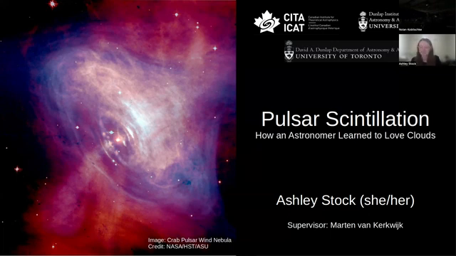My Start in Astronomy
My interest in astronomy ignited a decade ago, with events like the solar eclipse at the University of Saskatchewan (Figure 1). While a solar filter was essential for safe observation, the persistent presence of clouds often obscured these celestial spectacles. This early frustration with clouds would later transform into a deeper appreciation for their role in revealing the secrets of the universe.
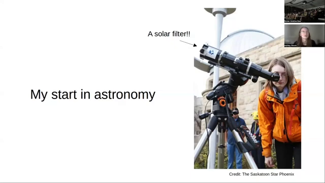The Problem with Clouds and Atmospheric Seeing
Clouds are an astronomer's persistent foe, often obstructing the view of anticipated events (Figure 2). Even on clear nights, atmospheric seeing, caused by light scattering off atmospheric particles, distorts celestial images (Figure 3). This phenomenon manifests as the twinkling of stars, a consequence of light interference.
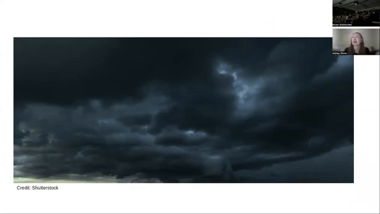 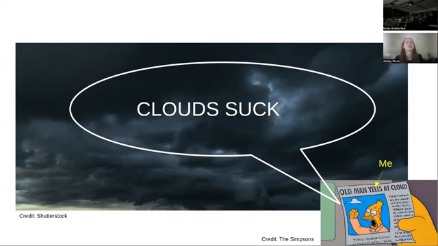 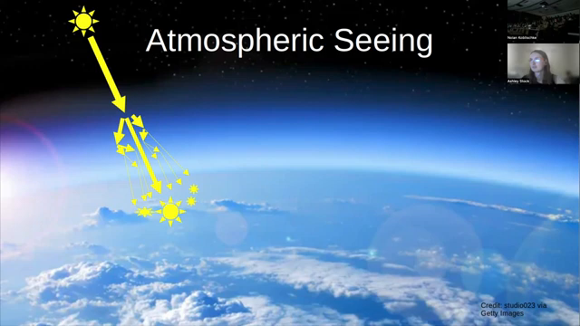Why Planets Don't Twinkle
While stars twinkle, planets generally do not (Figure 4). This distinction arises from their apparent size in the sky. Stars, despite their vast physical size, are so distant that they appear as point sources, susceptible to atmospheric seeing. Planets, being closer, appear as extended objects, mitigating the effects of atmospheric distortion.
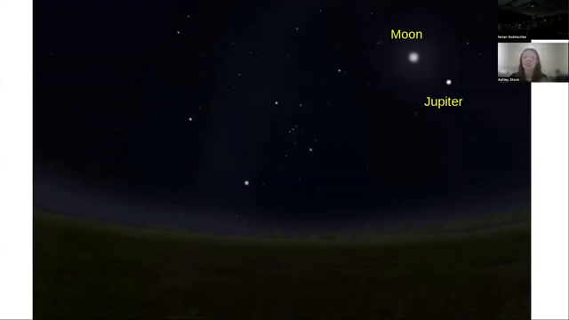Overcoming Atmospheric Effects
To circumvent atmospheric interference, astronomers employ various strategies. One approach is to position telescopes in space, eliminating the distorting effects of the atmosphere (Figure 5). Alternatively, observing at specific wavelengths where atmospheric absorption is minimal, such as in the radio spectrum, allows ground-based telescopes to obtain clear images (Figure 6).
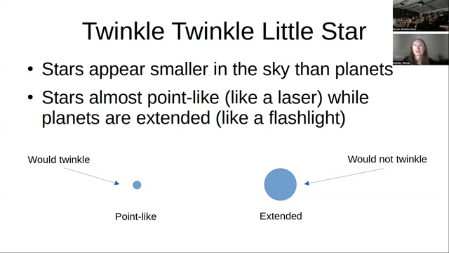 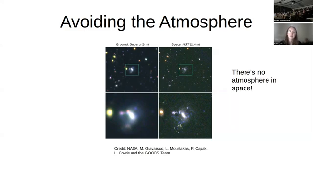 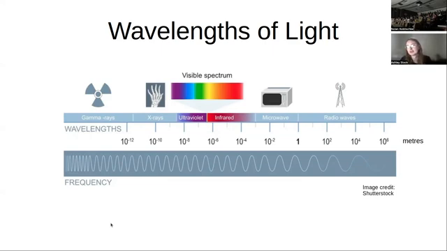 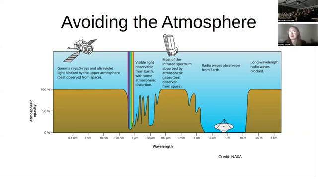Radio Astronomy and Pulsars
Radio astronomy, focusing on longer wavelengths, largely bypasses atmospheric limitations. Radio telescopes vary in design, from traditional dish antennas to simpler arrays of metal rods (Figure 7). This field unveils a different view of the universe, revealing extended structures like galaxies and supernova remnants, rather than the individual stars prominent in visible light (Figure 8). Within this radio sky, pulsars, a type of neutron star, act as point-like sources, similar to stars in the optical regime (Figure 9).
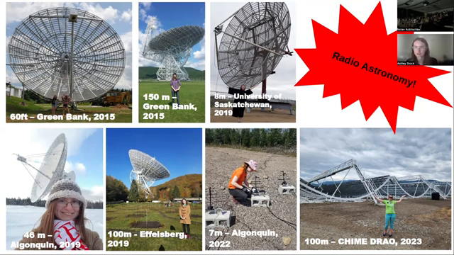 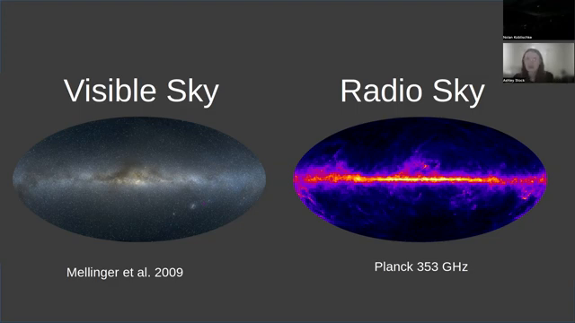The Pulsar Sky
Mapping the positions of known pulsars reveals a distribution mirroring that of stars in the Milky Way, concentrated along the galactic plane (Figure 10). This distribution highlights the potential of pulsars for studying stellar astrophysics in the radio domain.
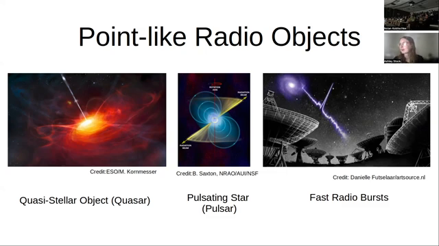 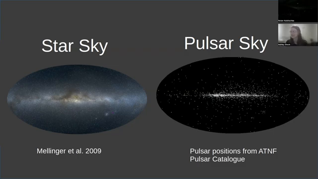What is a Pulsar?
Pulsars are neutron stars, a type of "dead star" (Figure 11). Their formation involves a dramatic stellar life cycle, culminating in a supernova explosion that leaves behind an incredibly dense core.
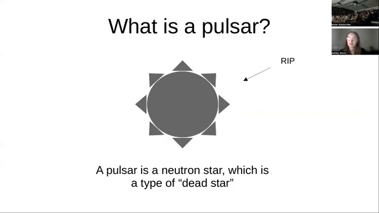The Life and Death of Stars
Stars begin their lives by fusing hydrogen into helium. This process continues, producing heavier elements, until an iron core forms (Figure 12). Iron cannot be further fused to generate energy, leading to core collapse and a supernova. The outer layers of the star are expelled, while the core collapses further, undergoing neutronization, where protons and electrons combine to form neutrons (Figure 13).
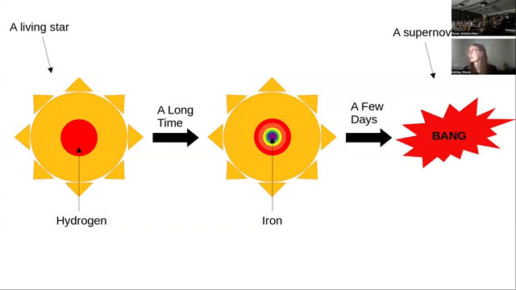 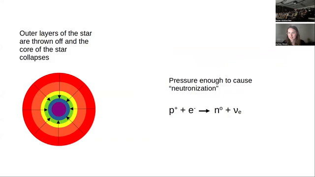Neutron Stars and Supernova Remnants
The collapsed core can result in a black hole, the densest object in the universe, or a neutron star, composed entirely of neutrons (Figure 14). Supernova remnants, the remnants of the exploded outer layers, often harbor neutron stars at their centers (Figure 15). These remnants provide a glimpse into the aftermath of a star's demise.
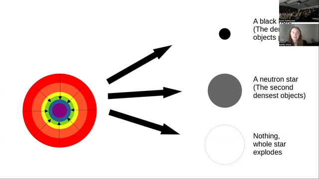Neutron Star Characteristics
Neutron stars possess extraordinary properties. With a diameter of approximately 26 kilometers, they pack the mass of one to two suns into an incredibly small space, resulting in unimaginable densities (Figure 16). They are extremely hot and have immense magnetic fields, trillions of times stronger than Earth's.
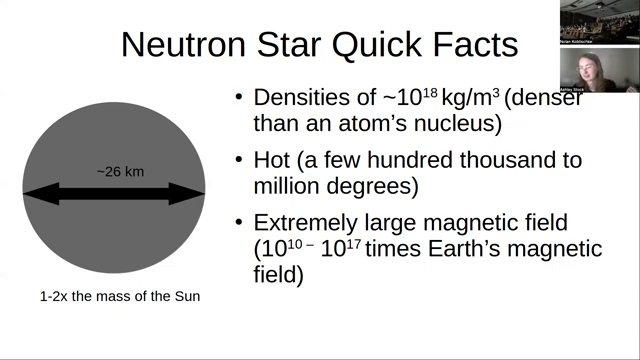Pulsars and Their Beams
The strong magnetic fields of neutron stars accelerate charged particles away from the poles, creating beams of radiation (Figure 17). As pulsars rotate, these beams sweep across our line of sight, causing the apparent pulsing that gives them their name (Figure 18). This precise and stable rotation allows for extremely accurate measurements of their timing.
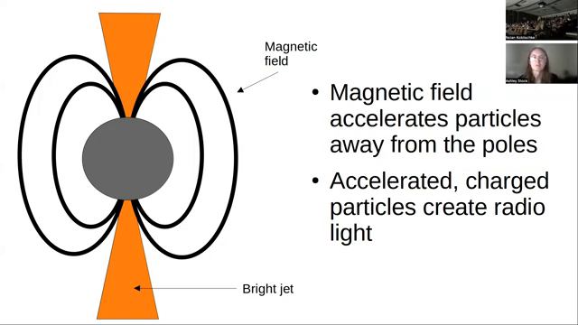 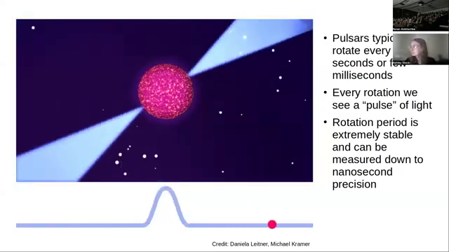Pulsar Timing and Applications
The stable rotation periods of pulsars enable the detection of minute changes in their distance, down to approximately 30 centimeters (Figure 19). This sensitivity allows for precise measurements of orbital parameters in binary systems and the detection of gravitational waves through pulsar timing arrays (Figure 20).
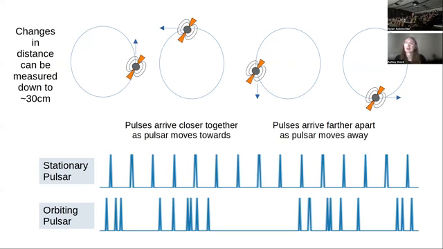 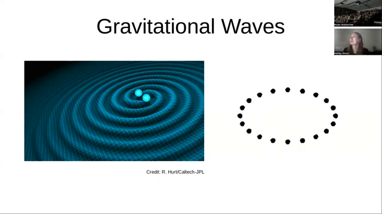 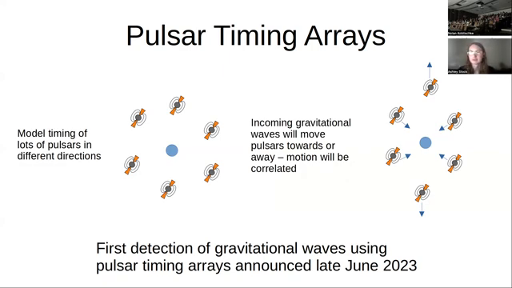Pulse Profiles and Interstellar Clouds
While idealized pulses appear as simple peaks, real pulse profiles exhibit a variety of shapes, making their timing more challenging (Figure 21). This complexity is further compounded by the presence of interstellar clouds, which affect the observed pulsar signals. These clouds, prevalent throughout the galaxy, are often found in the same regions as stars and pulsars (Figure 22).
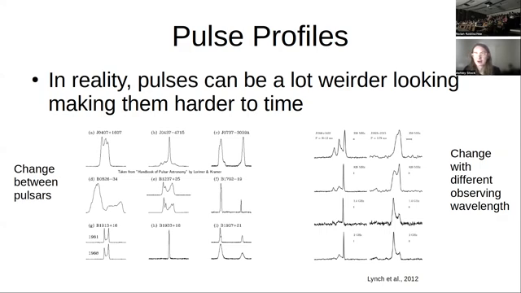 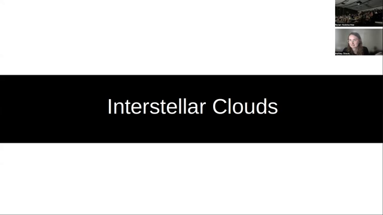 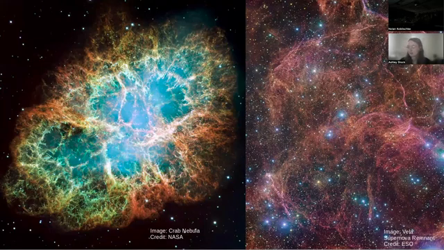 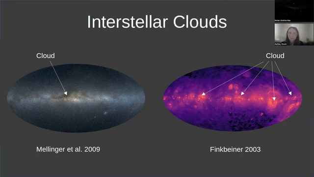Cloud Interactions with Pulsar Light
Interstellar clouds interact with pulsar light in several ways. One effect is a time delay, caused by the slowing down of light as it passes through the cloud (Figure 23). This refraction, akin to the splitting of light in a prism, depends on the wavelength, resulting in different arrival times for different colors (Figure 24). This phenomenon is known as dispersion measure in pulsar astronomy.
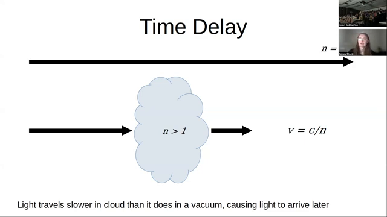 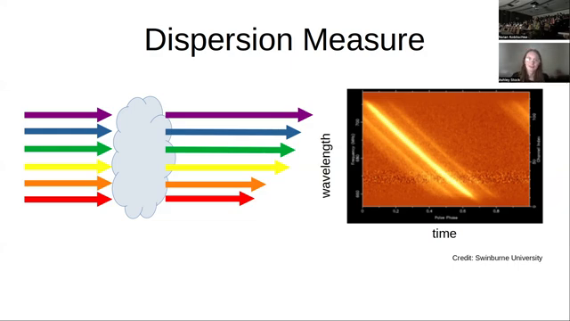Scatter Broadening and Scintillation
In addition to time delays, clouds can scatter light, creating multiple images of the pulsar with varying brightness and apparent size depending on the wavelength (Figure 25). This scattering, similar to atmospheric seeing, leads to a phenomenon called scintillation in radio astronomy, where the pulsar appears to twinkle (Figure 26). This twinkling is analogous to the shimmering of city lights reflected off water (Figure 27).
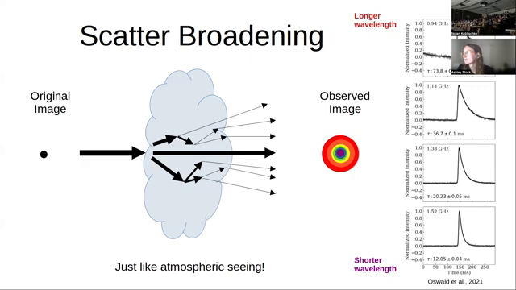 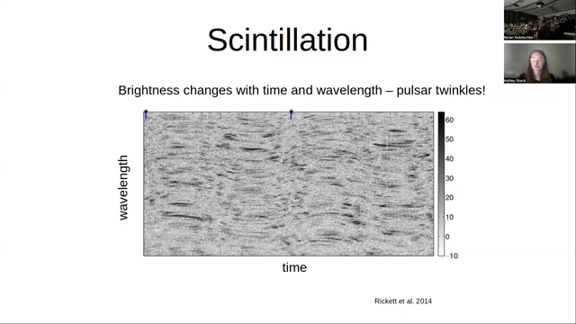
Probing Clouds with Scintillation
By analyzing scintillation patterns, we can glean information about the clouds themselves. The time delay between scattered and unscattered light provides insights into the distance to the cloud (Figure 28). The twinkling rate reveals the relative velocities of the pulsar, cloud, and Earth, allowing us to determine the cloud's velocity, which is otherwise difficult to measure.
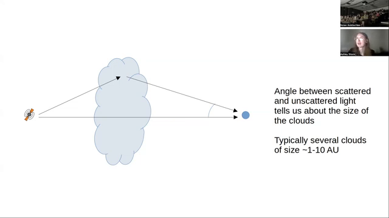Cloud Sizes and the Interstellar Medium
Scintillation measurements also reveal the angular extent of the scattering, providing estimates of cloud sizes, typically ranging from one to ten astronomical units (AU). This scale is remarkably small in the context of the vast interstellar medium, where structures can span millions or even billions of AU (Figure 29).
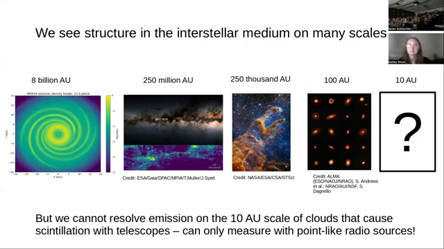My Research: Yelling at Clouds
My research focuses on identifying and characterizing the clouds responsible for pulsar scintillation (Figure 30). This involves analyzing how the brightness of pulsars changes over time and determining the distance, velocity, and shape of the intervening clouds.
The Mystery of Scintillating Clouds
While the source of scintillation remains unknown for most pulsars, a few cases have been linked to specific structures, such as supernova remnants, bow shocks around pulsars, solar winds, and HII regions (Figure 31).
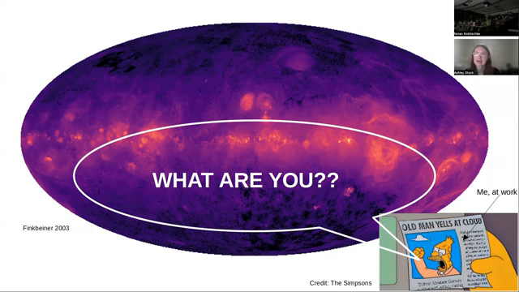Measuring Scintillating Clouds
By analyzing scintillation patterns, I measure the distance, velocity, and shape of the scattering clouds (Figure 32). This involves comparing scintillation data with maps of gas emission to identify potential correlations.
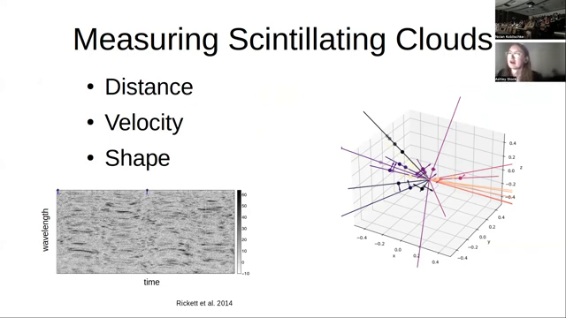Conclusion
Pulsar scintillation, initially a source of frustration, has become a valuable tool for probing the interstellar medium. By studying this twinkling of pulsars, we can unveil the properties of clouds at scales far smaller than those accessible through traditional astronomical observations. This research provides a unique window into the intricate structure and dynamics of the gas that permeates our galaxy.